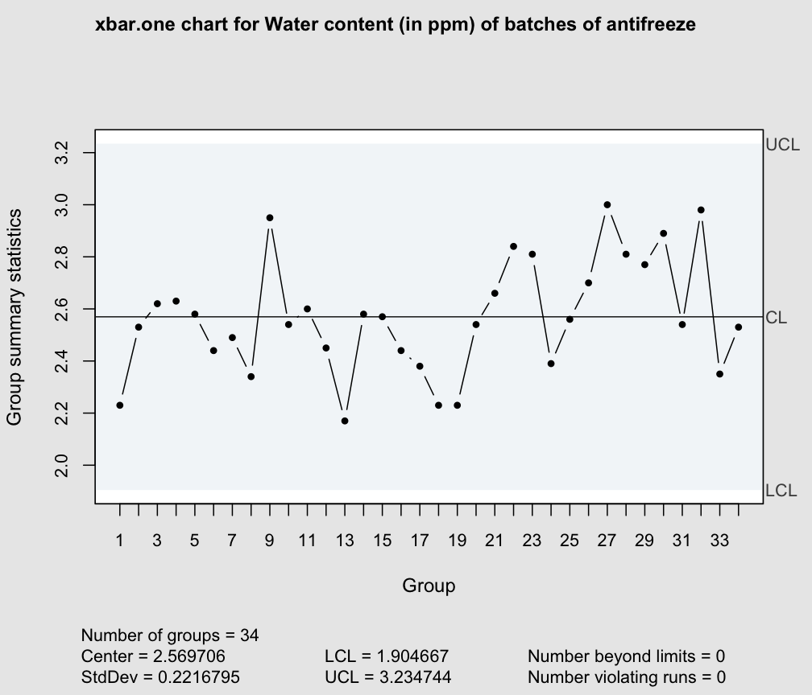

Statistics used in computing and drawing a Shewhart xbar chart for one-at-time data
These functions are used to compute statistics required by the xbar chart for one-at-time data.
stats.xbar.one(data, sizes)
sd.xbar.one(data, sizes, std.dev = c("MR", "SD"), r = 2, …)
limits.xbar.one(center, std.dev, sizes, nsigmas = NULL, conf = NULL)
Arguments
| data | the observed data values |
|---|---|
| center | sample/group center statistic. |
| sizes | samples sizes. Not needed, |
| r | number of successive pairs of observations for computing the standard deviation based on moving ranges of r points. |
| std.dev | within group standard deviation. Optional for |
| nsigmas | a numeric value specifying the number of sigmas to use for computing control limits. It is ignored when the |
| conf | a numeric value \(\in (0,1)\) specifying the confidence level to use for computing control limits. |
| … | catches further ignored arguments. |
Details
Methods available for estimating the process standard deviation:
| Method | Description |
"MR" |
moving range: this is estimate is based on the scaled mean of moving ranges |
Value
The function stats.xbar.one returns a list with components statistics and center.
The function sd.xbar.one returns std.dev the standard deviation of the statistic charted.
The function limits.xbar.one returns a matrix with lower and upper control limits.
References
Montgomery, D.C. (2005) Introduction to Statistical Quality Control, 5th ed. New York: John Wiley & Sons.
Ryan T.P. (2000) Statistical Methods for Quality Improvement, New York: John Wiley & Sons.
Wetherill, G.B. and Brown, D.W. (1991) Statistical Process Control. New York: Chapman & Hall.
See also
Examples
# Water content of antifreeze data (Wetherill and Brown, 1991, p. 120) x <- c(2.23, 2.53, 2.62, 2.63, 2.58, 2.44, 2.49, 2.34, 2.95, 2.54, 2.60, 2.45, 2.17, 2.58, 2.57, 2.44, 2.38, 2.23, 2.23, 2.54, 2.66, 2.84, 2.81, 2.39, 2.56, 2.70, 3.00, 2.81, 2.77, 2.89, 2.54, 2.98, 2.35, 2.53) # the Shewhart control chart for one-at-time data # 1) using MR (default) qcc(x, type="xbar.one", data.name="Water content (in ppm) of batches of antifreeze")#> xbar.one chart for Water content (in ppm) of batches of antifreeze #> #> Summary of group statistics: #> Min. 1st Qu. Median Mean 3rd Qu. Max. #> 2.170000 2.440000 2.550000 2.569706 2.690000 3.000000 #> #> Group sample size = 1 #> Number of groups = 34 #> Center of group statistics = 2.569706 #> Standard deviation = 0.1794541 #> #> Control limits: #> LCL UCL #> 2.031344 3.108068# 2) using SD qcc(x, type="xbar.one", std.dev = "SD", data.name="Water content (in ppm) of batches of antifreeze")#> xbar.one chart for Water content (in ppm) of batches of antifreeze #> #> Summary of group statistics: #> Min. 1st Qu. Median Mean 3rd Qu. Max. #> 2.170000 2.440000 2.550000 2.569706 2.690000 3.000000 #> #> Group sample size = 1 #> Number of groups = 34 #> Center of group statistics = 2.569706 #> Standard deviation = 0.2216795 #> #> Control limits: #> LCL UCL #> 1.904667 3.234744# "as the size increases further, we would expect sigma-hat to settle down # at a value close to the overall sigma-hat" (Wetherill and Brown, 1991, # p. 121) sigma <- NA k <- 2:24 for (j in k) sigma[j] <- sd.xbar.one(x, k=j) plot(k, sigma[k], type="b") # plot estimates of sigma forabline(h=sd(x), col=2, lty=2) # different values of k